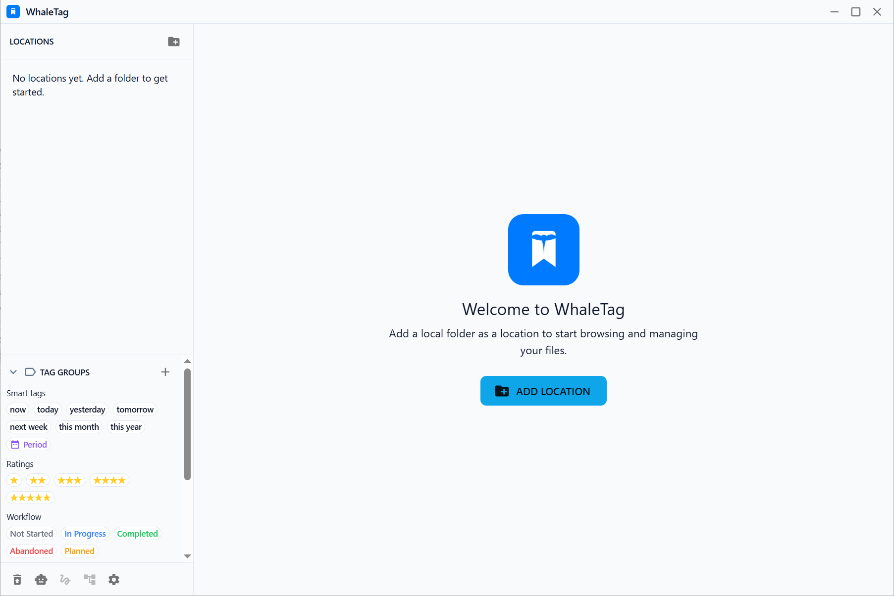

环境要求
- Node.js ≥ 18
- npm(随 Node.js 一起安装)
- Git(用于克隆仓库)
从源码克隆到本地,启动 WhaleTag 并开始管理你的第一个文件夹位置。
git clone git@github.com:FE-Berserker/WhaleTag.git && cd WhaleTagnpm installnpm run devELECTRON_RUN_AS_NODE 已被 unset。残留值会让 Electron 退化成纯 Node 进程,主进程窗口无法弹出。
启动后,点击左侧位置面板中的「添加位置」,选择一个本地文件夹。WhaleTag 会在该文件夹下创建 .whale/ 元数据目录,用于存储标签、索引和缩略图,但不会修改原文件名或文件夹结构。
